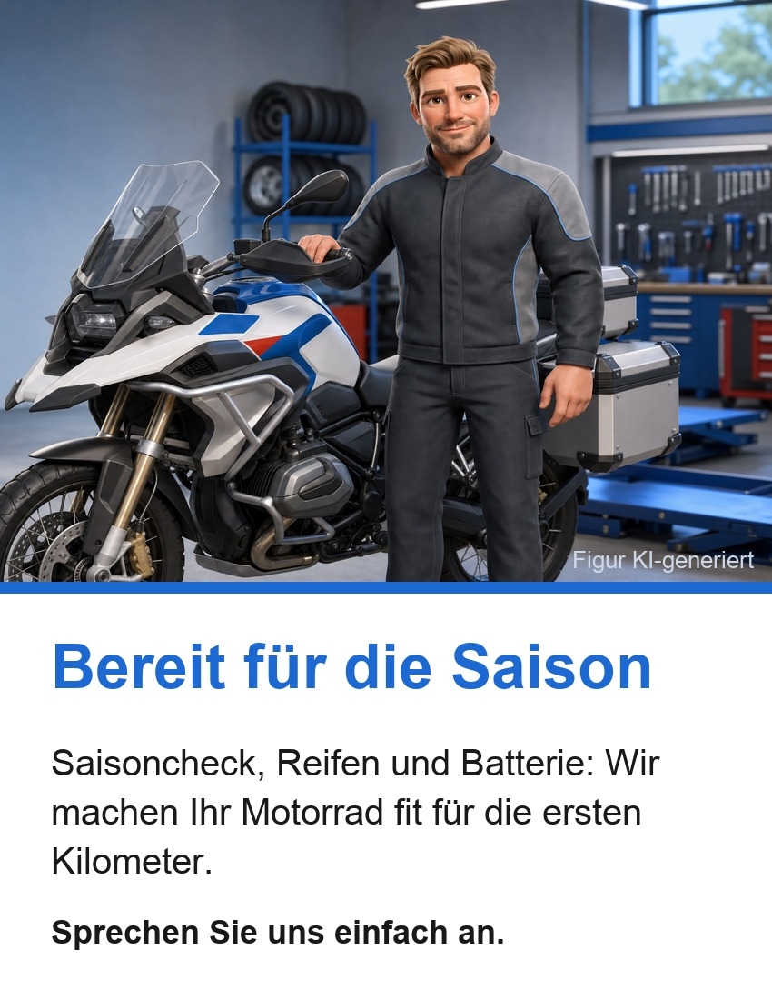
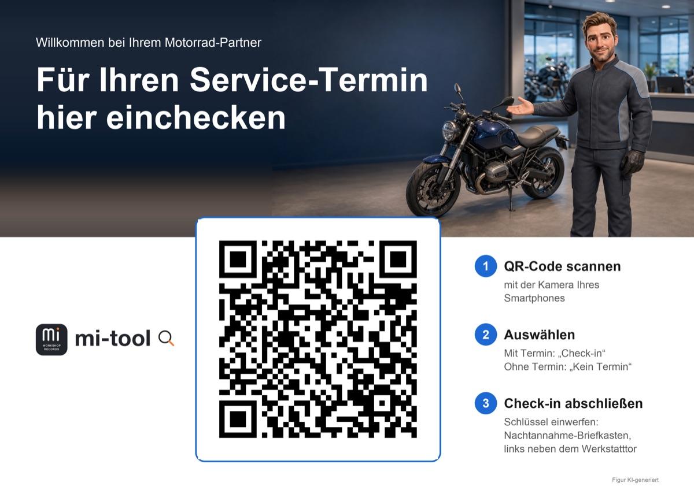
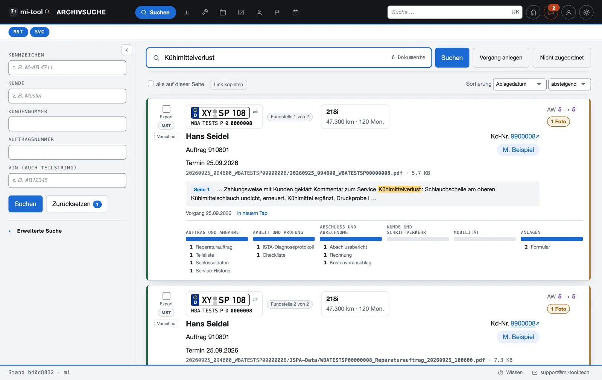
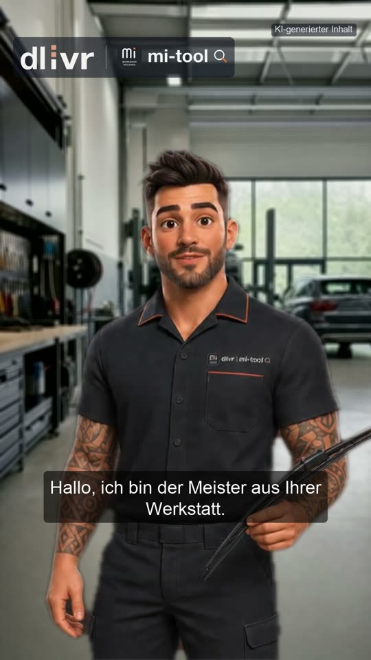

Strategie & Organisation
Unternehmensberatung
Wenn die Richtung klarer werden soll.
Wir unterstützen Sie dabei, die Ausgangslage zu analysieren, Prozesse zu hinterfragen und Prioritäten für Ihr Unternehmen festzulegen.
Frank Töpfer · Unternehmensberatung & Interimsmanagement
Klarheit schaffen. Verantwortung übernehmen. Veränderungen umsetzen. Wir unterstützen kleine und mittelständische Unternehmen – mit Erfahrung im Autohandel, in der Führung und in der Digitalisierung.
Abläufe und Herausforderungen erfassen.
Prioritäten und nächste Schritte festlegen.
Gemeinsam im Betrieb wirksam werden.
Wo wir unterstützen
Beratung und operative Mitarbeit greifen ineinander. Welche Unterstützung sinnvoll ist, richtet sich nach Ihrer Situation.
Strategie & Organisation
Wenn die Richtung klarer werden soll.
Wir unterstützen Sie dabei, die Ausgangslage zu analysieren, Prozesse zu hinterfragen und Prioritäten für Ihr Unternehmen festzulegen.
Verantwortung auf Zeit
Wenn Führung oder zusätzliche Kraft fehlt.
Wir übernehmen operative Verantwortung bei Führungsvakanzen und begleiten Projekte auf Zeit – in enger Zusammenarbeit mit Ihrem Team.
Branchenkenntnis
Wenn die Lösung zum Betrieb passen muss.
Branchenspezifische Unterstützung für den Automobilhandel: von Vertriebsabläufen bis zur Betriebsorganisation, mit Verständnis für den Arbeitsalltag.
Systeme & Abläufe
Wenn Technik im Alltag helfen soll.
Wir begleiten die Einführung und Verbesserung von IT-Lösungen. Ausgangspunkt sind Ihre Abläufe und die Menschen, die täglich damit arbeiten.
Menschen & Veränderung
Wenn Veränderung gemeinsam gelingen soll.
Wir unterstützen Führungskräfte und Teams dabei, Zusammenarbeit zu gestalten, Zuständigkeiten zu klären und Veränderungen im Betrieb zu verankern.
Planung & Umsetzung
Wenn aus einem Vorhaben Ergebnisse werden sollen.
Wir strukturieren Projekte, koordinieren die Beteiligten und begleiten die Umsetzung – von der Planung bis zur Übergabe in den laufenden Betrieb.
Medien & Inhalte
Wenn Ihre Kunden mehr sehen sollen als Text.
Wir erstellen mit KI Erklärclips, Werbebilder, Aushänge und Vorspann für Ihre Videos – passend zu Ihrem Betrieb und zu Systemen wie Fleetback oder soft-confirm und soft-drop von soft-nrg.
Kundenkommunikation & Systeme
Wenn Ihre Smart Video Kommunikation so mit Ihren Kunden spricht wie Ihr Haus.
Wir richten Systeme der Smart Video Kommunikation (SVC) wie Fleetback oder soft-confirm und soft-drop von soft-nrg auf Ihr Haus ein: Texte, Videos, Check-in und Kampagnen. Fleetback richten wir nach einer einheitlichen Vorgabe ein und prüfen die Einstellungen Standort für Standort.
Formulare & Abläufe
Formularbeispiel · Prüfprotokoll
aus Textbaustein übernommen
Offene Mängel: Beleuchtung
Vor dem Abschluss: 1 Prüfpunkt unbeantwortet
Formularbeispiel · Datenschutz-Einwilligung
aus Textbaustein übernommen
Kontakt erwünscht über
Unterschrift am PadMusterstadt, 14.03.2026
Formularbeispiel · Gewährleistungs-Checkliste
aus Textbaustein übernommen
Auftragseröffnung
Werkstatt
Rechnungsstellung
Offen: Fotos der Beanstandung
Vor dem Abschluss: Unterschrift Sachbearbeitung
Formularbeispiel · Mietwagen-Rücknahme am Pad
Kunde aus Textbaustein · Kennzeichen und Mitarbeiter aus Auswahlliste · Zeitpunkt per Knopf „jetzt“
Unterschrift Benutzer am Pad14.03.2026 16:21
Wir überarbeiten bestehende Formulare und passen sie an Ihren Arbeitsalltag an – mit Datenübernahme aus vorhandenen Systemen, verständlichen Eingabefeldern und nachvollziehbaren Prüfungen. Bei Bedarf auch für die Unterschrift am Pad.
Zum Beispiel für Prüfprotokolle, Datenschutz-Einwilligungen, Gewährleistungs-Checklisten, Service-Checks und Mietwagen-Rücknahme.
Ziel sind weniger Doppelerfassung und eine einheitliche Dokumentation. Die konkreten Möglichkeiten stimmen wir auf Ihre vorhandenen Systeme ab.
Die Automatiken – Daten einfügen, Markierungen, Kürzel und Zeitstempel – laufen im kostenlosen Adobe Acrobat Reader und in Acrobat Pro. Andere PDF-Programme füllen die Formulare nur von Hand aus.
KI-Medien · neu
Erklärclips, Werbebilder, Aushänge und Vorspann für Ihre Videos – mit KI erstellt, auf Ihren Betrieb abgestimmt und vor der Übergabe geprüft. Dass hier KI am Werk ist, sieht man. Das ist Absicht.
Kurze Erklärclips mit einer wiedererkennbaren Figur, Werbebilder für Website und soziale Medien – in Ihren Farben, mit Ihrem Logo.
Intro und Outro für die Videos, die Ihre Werkstatt über Fleetback verschickt, und fertige Clips zum Hinterlegen in soft-confirm und soft-drop von soft-nrg.
Aushänge in A4 mit QR-Code für Check-in und Schlüsselkasten, Hintergründe für Check-in-Seiten und Unterschriften-Pads.


Alle Figuren und Szenen sind KI-generiert und als solche gekennzeichnet – die gezeichneten ebenso wie die realistischen. Die Muster, Personen und Betriebe sind erfunden; Logo, Farben und Texte stimmen wir für Ihren Betrieb gemeinsam ab. Weitere Clips auf YouTube
Digitalisierung in der Praxis
Gute Digitalisierung löst ein konkretes Problem. mi-tool macht vorhandene Serviceunterlagen im Autohaus auffindbar.
Suchen Sie nach Kennzeichen, Kunde oder Text – direkt im Browser. Ihre bestehende Ablage bleibt unverändert, Ihre Kundendaten bleiben im Haus.

Der Mensch hinter DLIVR
Unternehmensberater.
Interimsmanager.
Praktiker.
Frank Töpfer verbindet Erfahrung im Kfz- und Automobilhandel mit IT-Systemen, Projektarbeit und Teamführung.
Als freiberuflicher Berater unterstützt er Unternehmen bei strategischen Entscheidungen und begleitet die Umsetzung im Betrieb. Dabei zählen für uns verständliche Lösungen, klare Zuständigkeiten und ein Blick für das Machbare.
DLIVR und mi-tool
Sauber erfassen, später gezielt wiederfinden, verständlich zeigen, Kunden erreichen: Rund um den Service greifen diese Aufgaben ineinander. Formulare, KI-Medien und die Einrichtung der Videokommunikation sind unsere Leistungen, mi-tool ist die Archivsuche. Jedes Angebot wird getrennt vereinbart – daraus folgt keine automatische Schnittstelle zwischen den Systemen.
PDF-Formulare · diese Seite
Formulare, die beim Ausfüllen helfen. Je nach Einrichtung: Angaben aus einem Textbaustein übernehmen, eindeutige Prüfbefunde, fehlende Angaben sichtbar machen.
Archivsuche · auf mi-tool.tech
Nach Kennzeichen, Kunde oder Text – direkt im Browser. Die Ablage bleibt unverändert, die Kundendaten bleiben im Haus.
KI-Medien · diese Seite
Erklärclips, Werbebilder und Aushänge, mit KI erstellt und auf Ihren Betrieb zugeschnitten.

SVC einrichten · eigene Seite
Smart Video Kommunikation wie Fleetback oder soft-confirm, eingerichtet auf Ihr Haus: Texte, Videos, Check-in und Kampagnen.
Kontakt
Ob konkrete Herausforderung oder erste Überlegung: Schildern Sie uns, was Sie beschäftigt. Wir klären gemeinsam, wie wir Sie unterstützen können.